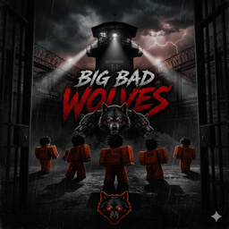

RESMİ YÖNETMELİK
Prison RP Türkiye — Resmi Oyun Kuralları
Cezaevi düzeni, şüpheli kademeleri, güncel tecrit/wanted süreleri, sivil-sağlık-güvenlik rolleri, nöbet esasları ve destek ticket prosedürleri.
Aramanızla eşleşen madde bulunamadı.
Giriş
Temel Katılım Esasları & Ceza Rehberi
Rol yapma felsefesi, iletişim rejimi, çatışma kuralları ve kademeli yaptırım basamakları.
[RESMİ REHBER]
Cezaevi Rol Mantığı ve Hiyerarşik Çözüm (Roleplay Dynamics)
Prison RP bir cezaevi simülasyonudur. Mahkûmlar ile güvenlik personeli arasındaki gerilimler, koğuş içi anlaşmazlıklar, hücre aramaları ve disiplin cezaları rolün doğal bir parçasıdır. Ufak sürtüşmelerde veya anlık kavgalarda hemen yetkili çağırmak yerine, durumun öncelikle oyun içi amirler (Çavuş, Yüzbaşı, Müdür) vasıtasıyla çözülmesi esastır.
[TEMEL İLKE]
Karakter Bütünlüğü, Korku ve Acı Rolü (FearRP & PainRP)
Her oyuncu canlandırdığı karakterin fiziksel sınırlarına uymak zorundadır. Silah tehdidi altında, rehin alındığında veya sayıca ezici bir güvenlik gücü karşısında karakterin canını hiçe sayan korkusuz tavırlar sergilemek (NoFear); yaralandığınızda veya darp edildiğinizde acıyı yansıtmayıp hiçbir şey olmamış gibi koşmaya devam etmek (NoPain) kesinlikle kural ihlalidir.
[İLETİŞİM REJİMİ]
Rol İçi ve Dışı İletişim Ayrımı (IC / OOC Ayrımı & Metagaming)
Oyun içi ses ve sohbet kanalları yalnızca rol için kullanılır; rol ortamında gereksiz OOC konuşmak yasaktır. Discord veya yayınlardan bilgi aktarımı (Metagaming) ağır yaptırıma tabidir. Karşı tarafa mantıksız üstünlük sağlayan, imkânsız eylemleri zorla dayatmak (Powergaming) sunucu düzenine aykırıdır.
[ÇATIŞMA DÜZENİ]
Sahne ve Çatışma Bütünlüğü (Combat Logging Yasağı)
Aktif bir çatışma, kovalama, gözaltı veya rol sahnesi devam ederken cezadan veya envanter kaybından kaçmak amacıyla oyundan çıkış yapmak (Combat Logging) ağır yaptırıma tabidir. Oyun çökmesi durumunda oyuncunun en geç 5 dakika içinde yetkili ekibine durumu bildirmesi ve sahneye dönmesi mecburidir.
[GÜVENLİ BÖLGE]
Toplu Güvenlik Alanları (MassRP) ve Revir Dokunulmazlığı
Cezaevi avlusu, idari bina, koğuş koridorları ve yemekhane güvenlik kameraları ve potansiyel nöbetçi güçleriyle korunur; ekranda o an gardiyan görünmese dahi uluorta yasa dışı eylem yapılamaz. Cezaevi reviri ve ameliyathane mutlak güvenli bölgedir; revirdeki hastalara veya sağlık çalışanlarına saldırmak kesinlikle yasaktır.
SÖZLÜ İKAZ BİLDİRİM
Hafif kusurlarda oyuncuyu bilgilendirici ve eğitici ilk ikazdır; sicil kaydına işlenmez.
RESMİ İHTAR UYARI
Kural ihlalinin resmi sicile işlenen ihtarıdır; tekrarlanan ihlallerde yaptırım katlanır.
SUNUCUDAN ATMA ATILMA
İhlali anında sonlandırmak için sunucudan çıkarılmadır. Oyuncu kurallara uyarak dönebilir.
UZAKLAŞTIRMA YASAKLAMA
Ağır kural ihlallerinde süreli veya kalıcı olarak sunucuya erişimin engellenmesidir.
Bölüm 1
1. Şüpheli Kademeleri, Suç Cetveli ve Kamu Cezaları
Suspect, Wanted ve Hostile prosedür sırası ile güncel tecrit/wanted süreleri.
[ZORUNLU SIRALAMA]
Şüpheli ve Suçlu Kademeleri (Prosedür ve Müdahale Sırası)
•
1. Suspect (Şüpheli):
Üstleri kesinlikle aranamaz! Kişi henüz suçlu değil, şüpheli konumundadır. Gardiyanlar yalnızca şahsa neden suspect durumuna düştüğünü sorabilir; keyfi taser sıkılamaz, kelepçelenemez veya üst araması yapılamaz.
•
2. Wanted (Aranan):
Belli bir suçu işlediği tespit edilmiş kişilerdir. Zorunlu Sıralama: Şahıs önce Taser ile etkisiz hale getirilir → Kelepçelenir → Üst araması eksiksiz yapılır → Tabletten suçu kontrol edilip tecrite atılır.
•
3. Hostile (Düşman):
Doğrudan birini öldürdükleri için bu duruma düşmüşlerdir. Tabletten cinayet sebebi derhal kontrol edilir; üstü baştan aşağı aranarak tüm suç aletlerine el konulur ve derhal azami tecrit cezası verilir.
| SUÇ TANIMI VE EYLEM | UYGULANACAK TECRİT SÜRESİ | İŞLEYİŞ VE TAHKİKAT DETAYI |
|---|---|---|
| Saldırı (Fiziksel / Silahsız) | 3 Dakika Tecrit | Yumruklaşma ve darp (3 dk Wanted; yakalanınca 3 dk tecrit). |
| Saldırı (Üzerinde Alet Bulunması) | 5 Dakika Tecrit | Kesici/demir aletle saldırı (5 dk Wanted; yakalanınca 5 dk tecrit). |
| Hostile (Cinayet / Kasten Öldürme) | 5 Dakika Tecrit | Bir oyuncuyu veya personeli kasten öldürme; derhal azami tecrit. |
| Maske (Yüz Gizleme) | 2 Dakika Tecrit | Cezaevi içinde yüzü gizleyen maske veya bandana kullanımı. |
| İsyana Katılmak | 2 Dakika Tecrit | Başlatılan bir isyan eylemine aktif olarak katılma. |
| Alan İhlali (Yasaklı Bölge) | 2 Dakika Tecrit | Roleplay gereği zorunluysa tecrit cezası uygulanmaz. |
| Kaçakçılık (Diğerleri) | 2 Dakika Tecrit | Tornavida, demir alet, ip veya yasaklı envanter bulundurma. |
| Uygunsuz Davranış | 1 Dakika Tecrit | Cezaevi huzurunu ve intizamını bozucu eylemler. |
| Tokat Atma (Fiziksel Taciz) | 1 Dakika Tecrit | Diğer mahkûmlara veya görevliye tokat atma (slap). |
| İsyana Teşebbüs ve Toplu Kaçış | 3 Dakika Tecrit | Güvenlik kapılarını zorlama veya toplu firar girişimi. |
[İLKEL TAHKİKAT]
Tecrit İnfazı ve Tablet Sistemi Denetimi
Gardiyanlar tecrit cezası vermeden önce şahsın suç kaydını tablet üzerinden teyit etmek mecburiyetindedir. Tablete bakılmaksızın tahmini ceza kesmek, süreleri keyfi uzatmak veya suçsuz kişileri tecrite göndermek görevi kötüye kullanma sayılır ve görevden ihraç sebebidir.
[KAMU DİREKTİFİ]
Kamu Cezaları ve Amir Takdiri (Community Sanctions)
Kamu cezaları, olay yerinde bulunmasına rağmen olaya daha pasif şekilde katılan veya doğrudan olayın içerisinde aktif rol almayan kişilere uygulanır.Uygulama İlkesi: Ceza süreleri, işlenen suçun niteliğine, olayın koşullarına ve yetkili amirin rolsel takdirine göre belirlenmelidir. Haksız ve keyfi ceza kesilemez.
Bölüm 2
2. Roller ve Cezaevi Hiyerarşisi (Sivil ve Sağlık Kadrosu)
Prisoner, Janitor, Cook, Nurse, Medic, Surgeon, Teacher ve Psychologist görev sınırları.
[İSTİHDAM KODU]
Sivil ve Hizmet Personeli Genel İstihdam Esasları
Cezaevinde istihdam edilen tüm çalışanlar tesis düzeninin ve gündelik işleyişin ayrılmaz bir parçasıdır. Her çalışan kendi görev tanımına uymak, vardiya saatlerini aksatmamak, amirlerin talimatlarını eksiksiz yerine getirmek ve cezaevi güvenliğini sarsacak yasa dışı faaliyetlerden uzak durmakla mükelleftir.
Prisoner (Mahkûm)
Temel Rol
Herkesin oyuna başladığı temel roldür. Legal (temizlik, aşçılık vb.) ve illegal (çete işleri, kaçakçılık) para kazanma yolları mevcuttur. Günlük cezaevi programına, müdür ve gardiyanların kurallarına uymak zorundadır.
Janitor (Temizlikçi)
Hizmet Kadrosu
Çöp torbalarını toplar, dökülenleri temizler ve yerleri paspaslar. Emeği karşılığında para kazanır. Cezaevi genel düzeninde hak ve yükümlülükleri mahkûmlarla tamamen aynı standarttadır.
Cook (Aşçı)
Hizmet Kadrosu
Yemek saatlerinde (sabah, öğle, akşam) mahkûmlar ve cezaevi çalışanları için mutfakta yemek pişirir ve dağıtır. Emek karşılığı para kazanır; mutfak ve yemekhane düzenini, hijyenini korumakla yükümlüdür.
Teacher (Öğretmen)
Eğitim Birimi
Günlük cezaevi programındaki eğitim saatinde mahkûmlara derslikte eğitim verir. Mahkûmların genel disiplinini gözetir; doğrudan Cezaevi Müdürünün talimat ve direktiflerine tabidir.
Nurse (Hemşire)
Sağlık: 1. Kademe
En düşük rütbeli sağlık çalışanıdır. Bayılan mahkûm ve çalışanları sedyeyle hastaneye taşır; yaralıları Bandaj (Bandage) ile sarar. Doktor ve Cerrahın dediklerini yapmakla yükümlüdür.
Medic (Doktor)
Sağlık: 2. Kademe
Orta rütbeli sağlık çalışanıdır. Hastanede yatan hastaları tedavi etmekle görevlidir. Hemşirelere görev dağıtabilir; Cerrahların talimat ve yönlendirmelerine eksiksiz uymak zorundadır.
Surgeon (Cerrah)
Sağlık: Başhekim
En yüksek rütbeli sağlık personelidir. Ağır cerrahi vakalara müdahale eder, altındaki tüm sağlık ekibine emir verir. Sağlık departmanının düzeninden doğrudan Cezaevi Müdürüne sorumludur.
Psychologist (Psikolog)
Sağlık: Terapi
Ruh sağlığı bozulan ve rehabilite olmak isteyen mahkûmlarla hastanedeki özel terapi odasında seans yapar. Mahkûmların psikolojik takibini yürütür ve randevuları aksatmaz.
[TIBBİ REJİM]
Sağlık Hizmetleri ve Tıbbi Müdahale Protokolü
Sağlık çalışanları mutlak tarafsızlık ilkesiyle hareket eder. Yaralı veya bilinci kapalı olan mahkûm ve güvenlik güçleri aciliyet sırasına göre tedavi edilir. Mahkûmlarla çıkar ilişkisine girip sahte sağlık raporu düzenlemek veya tıbbi envanteri kaçırmak doğrudan görevden ihraç ve ağır ban sebebidir.
[DİSİPLİN KURALI]
Sivil ve Sağlık Çalışanları Disiplin Kuralı (Worker Conduct)
Hizmet ve sağlık personeli rollerini kötüye kullanarak kaçakçılık yapamaz veya mahkûmlara yetkisiz eşya/ilaç sağlayamaz. Mesai saatlerinde görev yerini izinsiz terk eden personel amirler tarafından derhal işten çıkarılabilir.
Bölüm 3
3. Güvenlik Teşkilatı ve Cezaevi Müdürü (Warden)
Guard, Sergeant, Captain, Bodyguard ve Warden yetki sınırları ve emir-komuta zinciri.
[EMİR KOMUTA]
Güvenlik Teşkilatı Rütbe Hiyerarşisi ve Emir Komuta Esasları
Cezaevinde asayiş ve disiplin katı bir hiyerarşik yapıya dayanır. En üst amir Cezaevi Müdürüdür; ardından Yüzbaşı, Çavuş ve Gardiyanlar gelir. Bodyguardlar yalnızca Müdüre bağlı yakın korumalardır ve personele ya da mahkûmlara idari talimat verme yetkileri bulunmaz. Tüm personel amirlerin verdiği meşru görev emirlerine uymak zorundadır.
[GÜVENLİK]
Guard (Gardiyan) — Kolunda 1 Adet Gri Çizgi
En düşük rütbeli güvenlik personelidir. Görevi; Wanted/Hostile olan mahkûmların tablet aracılığıyla suç geçmişine bakıp cezasını kesmektir. Hiyerarşiye göre çavuş ve yüzbaşılarını dinlemek zorundadır; emre itaatsizlik görevden ihraç sebebidir. Müdürün düzenlediği toplantılara katılım mecburidir.
[AMİRLİK]
Sergeant (Çavuş) — Kolunda 3 Adet Gri Çizgi
Orta rütbeli güvenlik amiridir. Görevleri; gardiyanların görevlerini iyi yapıp yapmadığını denetlemek, intizamı sağlamak ve zor durumlarda gardiyanlara yardımcı olmaktır. Yüzbaşıdan emir alır, gardiyanlara emir verebilir; toplantılara katılmak zorundadır.
[BAŞAMİR]
Captain (Yüzbaşı) — Kolunda Altın Sarısı Dikdörtgen
En yüksek rütbeli güvenlik personelidir. Hapishanedeki güvenliği genel denetler, gardiyan ve çavuşlara emir vererek düzeni sağlar. Doğrudan Müdürden emir alır; Bodyguard'dan emir almaz, toplantılara katılır.Silah Taşıma Yetkisi: Ateşli silahı olan TEK güvenlik personelidir. Silahı en tehlikeli durumlar haricinde veya eğlence amaçlı kullanmak derhal görevden ihraç ve ağır ban sebebidir!
[KORUMA]
Bodyguard (Müdür Koruması) — Yakın Koruma Ekibi
Müdürün bizzat yanında duran korumalarıdır. Yalnızca Müdürden emir alır; kimseye emir veremez. Mahkûmlar veya gardiyanlar üzerinde hiçbir idari veya cezai yetkisi yoktur. Müdür izin vermedikçe yanından ayrılamaz; çağırdığında derhal yanına gelmelidir. Toplantıların denetimini ve güvenliğini sağlar.Silah Kuralı: Silahını en tehlikeli durumlar haricinde, Müdürü korumak dışında kesinlikle kullanamaz ve kimseye doğrultamaz. Keyfi silah çekmek derhal görevden ihraç ve ban sebebidir.
[EN ÜST MAKAMI]
Warden (Cezaevi Müdürü) — En Yetkili Mülki Amir
Hapishanedeki en yetkili kişidir ve tüm birimlerin işleyişinden sorumludur. Çalışanların görevlerini yapıp yapmadığını denetler, güvenliği sağlar. Mahkûmlar için sayım başlatıp sayım esnasında üst arayabilir. Güvenlik personeli için toplantılar düzenleyip görev dağıtır. Görevini kötüye kullanırsa isyan başlatılabilir veya devlet tarafından ihraç edilir.
[MÜDÜR DİREKTİFİ]
Cezaevi Müdürü Bağlayıcı Kuralları (Warden Protocol)
Kötü Müdür Rolü Yasaktır: Müdürler gardiyan veya mahkûmlara keyfi ayrımcılık yapamaz; kötü müdür rolü kabul edilmez.Haksız İşten Atma Yasağı: Durduk yere, geçerli rol gerekçesi olmaksızın kimse işten atılamaz.
Ateş Etme Yasağı: Bir personele veya sebepsiz yere mahkûma kesinlikle ateş açılamaz (Katiyen gardiyana sıkılamaz).
Makam Odası Güvenliği: Odasına giren bir kişiden rahatsızsa korumalardan rica ederek silahsız şekilde dışarı çıkarttırır.
Yetki Taslama Yasağı: Müdür olmadığı halde hiç kimse "Ben müdürüm" diyemez. İzinsiz etkinlik veya organizasyon yapılamaz.
Bölüm 4
4. Nöbet Esasları, Telsiz ve İsyan Protokolü
Nöbet bölgesi disiplini, 3 saniye telsiz kuralı, Taser önceliği ve Kod Kırmızı prosedürü.
[NÖBET DÜZENİ]
Genel Güvenlik ve Nöbet Esasları
•
Madde 1.1 (Bölge Sadakati):
Her gardiyan, tayin edildiği nöbet bölgesini (koğuş koridorları, avlu, yemekhane ve tecrit alanları) hiçbir suretle terk edemez. Devriye saatleri harfiyen uygulanacaktır.
•
Madde 1.2 (Telsiz Disiplini):
Telsizler sürekli açık, yüksek ses seviyesinde ve operasyonel frekansa ayarlı tutulacaktır. Telsiz çağrılarına anında (en geç 3 saniye içinde) yanıt verilmesi zorunludur.
[DİSİPLİN REJİMİ]
Mahkûm İletişimi ve Disiplin Politikası
•
Madde 2.1 (Menfaat Yasağı):
Mahkûmlarla görev kapsamı dışındaki konularda samimiyet kurulamaz; mahkûmlardan hediye, tütün, para veya herhangi bir menfaat kabul edilemez.
•
Madde 2.2 (Resmi Hitap):
Mahkûmlara yönelik hitaplar resmi ve mesafeli olacaktır. Hakaret, küfür, psikolojik baskı veya fiziksel şiddet (zorunlu orantılı müdahale hariç) katiyen yasaktır.
•
Madde 2.3 (Arama ve Zapt):
Hücre aramalarında ve üst yoklamalarında tarafsızlık esastır; ele geçirilen yasaklı maddeler (kesici alet, demir alet vb.) derhal tutanakla merkeze teslim edilir ve personele iade edilmez.
[MÜDAHALE ÖNCELİĞİ]
Müdahale ve Taser Önceliği Kuralı
Bir şüpheliyi veya kaçan şahsı kovalarken öncelik kesinlikle TASER'dır; taser kullanımı zorunludur. Taser kullanmadan doğrudan ateşli silaha sarılmak veya gereksiz yere öldürücü müdahalede bulunmak kesinlikle yasaktır ve görevden ihraç sebebidir.
[KOD KIRMIZI]
Acil Durum ve İsyan Protokolü (Emergency Protocol)
•
Madde 3.1 (Alarm ve İntikal):
Herhangi bir isyan, toplu kavga, firar girişimi veya rehin alma durumunda ilgili personel anında "Kod Kırmızı" alarmı verecek ve en yakın destek ekibi olay yerine intikal edecektir.
•
Madde 3.2 (Emir Komuta):
Acil durumlarda müdahale edilirken kıdemli gardiyanın, Yüzbaşının veya Müdürün talimatları dışına çıkılamaz; bireysel ve fevri hareketlerden kesinlikle kaçınılacaktır.
[İNTİZAM KODU]
Güvenlik Personeli Toplantı ve İntizam Esasları (Briefing Code)
Cezaevi Müdürü tarafından ilan edilen tüm personel toplantılarına katılmak zorunludur. Geçerli bir mazeret sunmaksızın toplantıya katılmayan personel görevden ihraç edilir.
[GÜVENLİK ESASI]
Hücre Arama, Müsadere ve Silah Güvenliği Protokolü
Cezaevi aramalarında ele geçirilen kesici aletler, demir malzemeler ve kaçak maddeler tutanakla derhal idareye teslim edilir, mahkûma kesinlikle iade edilmez. Personelin durduk yere mahkûma veya diğer meslektaşlarına ateş açması (Friendly Fire) katiyen yasaktır; ihlal anında görevden ihraç edilir.
Bölüm 5
5. Sık Karşılaşılan İhlaller ve Yetkili Yaptırımları
Oyun içi sık ihlaller özeti, destek ticket kanıt kuralları ve 15 dakika devralma kuralı.
| İHLAL VE HATA TANIMI | UYGULANACAK YAPTIRIM VE CEZA DİZİLİMİ |
|---|---|
| Sebepsiz Saldırı ve Öldürme (Freekill / RDM) | Bildirim (Notify) → Uyarı (Warn) → Sunucudan Atma (Kick) → 12 Saat ila 3 Gün Yasaklama (Ban) |
| Toplu Hatalı Rol & Sabotaj (Mass FRP / Troll RP) | Ağır ihlal: Doğrudan 3 Günlük ila Kalıcı Yasaklama (Ban) |
| Sahneden / Cezadan Kaçma (Combat Logging) | Uyarı (Warn) → 12 Saatlik Yasaklama (Ban) → 3 Günlük Yasaklama (Ban) |
| Oyuncuya Hakaret ve Saygısızlık | Bildirim (Notify) → Uyarı (Warn) → Sunucudan Atma (Kick) → 12 Saatlik Yasaklama (Ban) |
| Ailevi Değerlere Küfür (ADK) | Ağırlığına göre doğrudan 7 Günlük Yasaklama (Ban) ila Kalıcı Yasaklama (Ban) |
| Kolluk Kışkırtma (Cop Bait) & Bunny Hop | Bildirim (Notify) → Uyarı (Warn) → Sunucudan Atma (Kick) → 12 Saatlik Yasaklama (Ban) |
| Oyun Açığı İstismarı (Usebug / Exploit) | Uyarı (Warn) → 1 Günlük Yasaklama (Ban) → 7 Günlük Yasaklama (Ban) → Kalıcı Yasaklama (Ban) |
| Robux ile Eşya / Para Satışı (Cross-Trading) | İlk sefer: 7 Günlük Yasaklama (Ban) → Tekrarı: Kalıcı Yasaklama (Ban) |
| Flört ve Cinsel İçerikli Rol (ERP / 18+) | Hafif durum: Sunucudan Atma (Kick) → Ciddi / Tekrar: 3 Günlük ila Kalıcı Yasaklama (Ban) |
| Yetkili Taklidi (Staff Impersonation) | Abartı değilse: 7 Günlük Yasaklama (Ban) → Abartı ise: Kalıcı Yasaklama (Permaban) |
| Ses Kirliliği / Earrape / Soundboard | Uyarı (Warn) → Sunucudan Atma (Kick) → 1 Gün ila 7 Gün Yasaklama (Ban) |
[DESTEK PROTOKOLÜ]
Destek Talebi (Ticket) ve Video Kanıt Şartı (Proof Policy)
Oyun içi ihlalleri Discord destek kanallarından yetkili ekibine bildirirken Medal.tv veya video ekran kaydı sunulması zorunludur. Olay öncesini göstermeyen kırpılmış kayıtlar reddedilir. Destek taleplerinde dürüst ve saygılı tutum esastır.
[15 DAKİKA KURALI]
Ticket Devralma ve İşlem Süresi Kuralı
Bir yetkili destek talebini üzerine aldıktan sonra 15 dakika boyunca ilgilenmez veya işlem yapmazsa, diğer yetkililer bileti devralma hakkına sahiptir. Destek talebinin sahipsiz kalması önlenir.